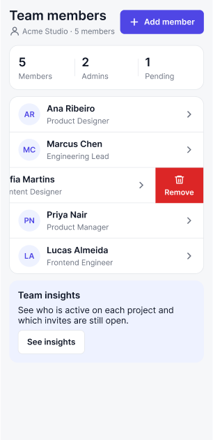
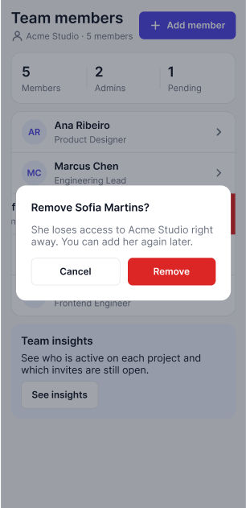
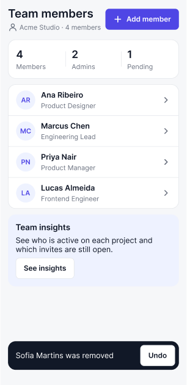

<!doctype html>
<!-- Source of assets/demo/demo.gif (?format=gif) and assets/demo/demo-social.mp4 (?format=social).
     Every phone image is a real 1x screenshot (get_screenshot, official Figma MCP, 2026-10-05) of a demo file
     built for a blind test, cropped to remove the status bar. The list lines are copied from the punch lists
     of that run, not rewritten. The page only edits these frames into a sequence.
     Fonts (SIL Open Font License, from Google Fonts): put Sora.ttf and JetBrainsMono.ttf next to this file.
     The page exposes window.setTime(seconds) and window.DURATION. Capture one screenshot per frame:
       gif:    1600 x 1000, scale 0.625, 10 fps, then ffmpeg palettegen and paletteuse
       social: 1080 x 1350, scale 1, 30 fps, then ffmpeg libx264, yuv420p, no audio track -->
<html><head><meta charset="utf-8">
<style>
@font-face { font-family: Sora; src: url(Sora.ttf); font-weight: 100 800; }
@font-face { font-family: Mono; src: url(JetBrainsMono.ttf); font-weight: 100 800; }
:root { --bg:#0B0C11; --ink:#E8E4DC; --line:#2B2D3C; --signal:#DC000C; --signal-ink:#FF6B5E; }
* { box-sizing: border-box; margin: 0; }
html, body { background: var(--bg); color: var(--ink); overflow: hidden; font-family: Sora; }
.abs { position: absolute; }
.phone { position: absolute; }
.phone img { position: absolute; inset: 0; width: 100%; height: 100%; display: block; border-radius: 24px; border: 2px solid var(--line); }
.phone svg { position: absolute; overflow: visible; left: 0; top: 0; }
.m { position: absolute; transform: translate(-50%, -50%); width: 44px; height: 44px; border-radius: 22px;
     background: var(--signal); color: #fff; font-family: Mono; font-weight: 800; font-size: 28px; line-height: 1;
     display: flex; align-items: center; justify-content: center; letter-spacing: -0.04em; }
.mono { font-family: Mono; font-weight: 700; }
.red { color: var(--signal-ink); }
.n { display: inline-flex; width: 44px; height: 44px; border-radius: 22px; background: var(--signal); color: #fff; font-family: Mono; font-weight: 800;
     font-size: 28px; align-items: center; justify-content: center; flex: none; letter-spacing: -0.04em; }
.item { display: flex; gap: 16px; align-items: flex-start; }
.item .n { margin-top: -3px; }
.item .t { font-family: Mono; font-weight: 700; }
.nowrap { white-space: nowrap; }

/* GIF: 1600 x 1000 CSS px */
[data-format="gif"] body { width: 1600px; height: 1000px; }
[data-format="gif"] #label { left: 96px; top: 40px; font-size: 34px; }
[data-format="gif"] #col { left: 700px; top: 40px; width: 840px; }
[data-format="gif"] #title { font-size: 52px; font-weight: 700; letter-spacing: -0.03em; line-height: 1.08; }
[data-format="gif"] #head { font-size: 30px; margin-top: 40px; padding-bottom: 14px; border-bottom: 2px solid var(--line); }
[data-format="gif"] #items { margin-top: 20px; font-size: 30px; line-height: 1.22; letter-spacing: -0.012em; }
[data-format="gif"] #items .item { margin-bottom: 14px; }
[data-format="gif"] .res { font-size: 30px; line-height: 1.3; margin-top: 8px; }
[data-format="gif"] #res-before { padding-top: 16px; border-top: 2px solid var(--line); margin-top: 18px; }
[data-format="gif"] #credit { display: none; }

/* Social: 1080 x 1350 CSS px */
[data-format="social"] body { width: 1080px; height: 1350px; }
[data-format="social"] #hook { left: 80px; top: 360px; width: 920px; font-size: 96px; font-weight: 700; letter-spacing: -0.035em; line-height: 1.04; }
[data-format="social"] #hook-sub { left: 80px; top: 740px; width: 920px; font-size: 40px; }
[data-format="social"] #label { left: 80px; top: 66px; font-size: 40px; }
[data-format="social"] #gate { right: 80px; top: 66px; font-size: 40px; }
[data-format="social"] #cap { left: 80px; top: 1128px; width: 920px; font-size: 44px; line-height: 1.22; letter-spacing: -0.015em; }
[data-format="social"] #cap .n { width: 56px; height: 56px; border-radius: 28px; font-size: 34px; }
[data-format="social"] #cap .item { gap: 22px; }
[data-format="social"] .states { top: 220px; display: flex; gap: 41px; left: 41px; }
[data-format="social"] .states figure { width: 306px; }
[data-format="social"] .states img { width: 306px; height: 631px; display: block; border-radius: 18px; border: 2px solid var(--line); }
[data-format="social"] .states figcaption { font-family: Mono; font-weight: 700; font-size: 34px; margin-top: 20px; }
[data-format="social"] #end { left: 80px; top: 300px; width: 920px; }
[data-format="social"] #end h2 { font-size: 104px; font-weight: 700; letter-spacing: -0.045em; line-height: 1; }
[data-format="social"] #end p { font-size: 48px; line-height: 1.2; margin-top: 28px; letter-spacing: -0.015em; }
[data-format="social"] #end .cmd { font-family: Mono; font-weight: 700; font-size: 33px; margin-top: 90px; padding: 26px 30px; border: 2px solid var(--line); border-radius: 18px; }
[data-format="social"] #end .url { font-family: Mono; font-size: 33px; margin-top: 30px; }
[data-format="social"] #credit { left: 80px; top: 1240px; width: 920px; font-size: 30px; }
</style></head>
<body>
<div id="stage"></div>
<script>
const q = new URLSearchParams(location.search);
const FORMAT = q.get('format') || 'gif';
document.documentElement.dataset.format = FORMAT;

// The first items of the figma-slop-check punch list of that run, copied as written.
const ITEMS = [
  [1, 'WCAG', 'upsell card body below the contrast and size floor'],
  [2, 'NAMING', 'default Figma name on the upsell card'],
  [3, 'NAMING', 'default Figma name on a divider'],
  [4, 'NAMING', 'default Figma names on the meta icon'],
  [5, 'INSTANCE', 'detached copy of ListItem'],
  [6, 'TOKEN', 'title raw hex'],
  [7, 'ICON', 'hand-drawn person icon instead of Icon/User'],
  [8, 'RADIUS', 'summary card radius off the scale'],
];
// The Summary lines of the before and after runs.
const RES_BEFORE = '<span class="nowrap">16 findings · 4 critical ·</span> <span class="nowrap">6 high · 4 medium · 2 low</span>';
const RES_AFTER = '<span class="nowrap">6 findings · 1 critical ·</span> <span class="nowrap">2 medium · 3 low</span>';
// Callouts in screenshot pixels (390 x 682 crop): [item, target x, target y, marker x, marker y].
const CALLOUTS = {
  1: [307, 577, 432, 600], 2: [372, 540, 432, 540], 3: [272, 98, 432, 50], 4: [12, 53, -42, 72],
  5: [18, 333, -42, 333], 6: [13, 27, -42, 22], 7: [14, 57, -42, 124], 8: [19, 156, -42, 176],
};

const L = FORMAT === 'gif'
  ? { phone: { x: 96, y: 110, s: 1.25 }, step: 0.45, first: 0.8, sumAt: 4.6, fadeAt: 5.8, fadeDur: 0, afterAt: 6.4, end: 9.0 }
  : { phone: { x: 277, y: 170, s: 1.35 }, step: 1.1, first: 3.4, sumAt: 12.4, fadeAt: 13.6, fadeDur: 0.6, afterAt: 14.3,
      phoneIn: 2.6, phoneOut: 16.4, statesIn: 16.8, statesOut: 20.6, endIn: 21.0, end: 24.5 };
window.DURATION = L.end;

const stage = document.getElementById('stage');
const el = (html) => { const d = document.createElement('div'); d.innerHTML = html.trim(); const n = d.firstChild; stage.appendChild(n); return n; };
const itemHTML = ([n, tag, text]) => `<div class="item"><span class="n">${n}</span><span><span class="t">[${tag}]</span> ${text}</span></div>`;

// Phone with both screenshots and the callouts.
const P = L.phone, W = 390 * P.s, H = 682 * P.s;
const phone = el(`<div class="phone" style="left:${P.x}px;top:${P.y}px;width:${W}px;height:${H}px">
  </div>`);
const NS = 'http://www.w3.org/2000/svg';
const svg = document.createElementNS(NS, 'svg');
svg.setAttribute('width', W); svg.setAttribute('height', H);
phone.appendChild(svg);
const callouts = {};
for (const [n, [tx, ty, mx, my]] of Object.entries(CALLOUTS)) {
  const g = document.createElementNS(NS, 'g');
  const line = document.createElementNS(NS, 'line');
  [['x1', mx * P.s], ['y1', my * P.s], ['x2', tx * P.s], ['y2', ty * P.s], ['stroke', '#DC000C'], ['stroke-width', 3.5]].forEach(([k, v]) => line.setAttribute(k, v));
  const dot = document.createElementNS(NS, 'circle');
  [['cx', tx * P.s], ['cy', ty * P.s], ['r', 7], ['fill', '#DC000C'], ['stroke', '#fff'], ['stroke-width', 2.5]].forEach(([k, v]) => dot.setAttribute(k, v));
  g.appendChild(line); g.appendChild(dot); svg.appendChild(g);
  const m = document.createElement('span');
  m.className = 'm'; m.textContent = n; m.style.left = (mx * P.s) + 'px'; m.style.top = (my * P.s) + 'px';
  phone.appendChild(m);
  callouts[n] = [g, m];
}
const label = el('<div id="label" class="abs mono">Before</div>');

let parts = {};
if (FORMAT === 'gif') {
  parts.col = el(`<div id="col" class="abs"><div id="title">Same screen. Before and after the checks.</div>
    <div id="head" class="mono"><span class="red">FAIL</span> figma-slop-check: punch list</div><div id="items"></div>
    <div id="res-before" class="res"><span class="mono">Before</span> ${RES_BEFORE}</div>
    <div id="res-after" class="res"><span class="mono">After&nbsp;</span> ${RES_AFTER}</div></div>`);
  parts.items = document.getElementById('items');
  parts.itemEls = ITEMS.map((it) => { const d = document.createElement('div'); d.innerHTML = itemHTML(it); const n = d.firstChild; parts.items.appendChild(n); return n; });
  parts.resBefore = document.getElementById('res-before');
  parts.resAfter = document.getElementById('res-after');
} else {
  parts.hook = el('<div id="hook" class="abs">A screen can look right while the file is wrong.</div>');
  parts.hookSub = el('<div id="hook-sub" class="abs mono">figma-slop-check on a Figma demo file</div>');
  parts.gate = el('<div id="gate" class="abs mono"><span class="red">FAIL</span></div>');
  parts.cap = el('<div id="cap" class="abs"></div>');
  parts.states = el(`<div class="abs states">
    <figure><figcaption>swipe</figcaption></figure>
    <figure><figcaption>confirm</figcaption></figure>
    <figure><figcaption>removed</figcaption></figure></div>`);
  parts.statesLabel = el('<div class="abs mono" style="left:80px;top:66px;font-size:40px">Remove flow, drawn in the fix pass</div>');
  parts.statesCap = el('<div class="abs" style="left:80px;top:1010px;width:920px;font-size:44px;line-height:1.22;letter-spacing:-0.015em">The handoff gate flagged Add member with no remove path. The fix pass drew swipe, confirm and removed.</div>');
  parts.end = el(`<div id="end" class="abs"><h2>figma-maxxing</h2><p>Agent skills for real Figma files.</p>
    <div class="cmd">npx skills add thiagoxikota/figma-maxxing</div><div class="url">github.com/thiagoxikota/figma-maxxing</div></div>`);
  parts.credit = el('<div id="credit" class="abs">Real screenshots from the official Figma MCP, 2026-10-05.</div>');
}

const clamp = (v) => Math.max(0, Math.min(1, v));
const ease = (v) => v * v * (3 - 2 * v);
const ramp = (t, start, dur) => dur <= 0 ? (t >= start ? 1 : 0) : ease(clamp((t - start) / dur));
const show = (node, o, dy = 0) => { node.style.opacity = o; node.style.transform = dy ? `translateY(${dy}px)` : ''; };

window.setTime = (t) => {
  const tween = FORMAT === 'gif' ? 0 : 0.25; // the GIF uses cuts, the video short fades
  const fade = ramp(t, L.fadeAt, L.fadeDur);
  const phoneIn = FORMAT === 'gif' ? 1 : ramp(t, L.phoneIn, 0.4) * (1 - ramp(t, L.phoneOut, 0.4));
  phone.style.opacity = phoneIn;
  document.getElementById('img-after').style.opacity = fade;
  ITEMS.forEach(([n], i) => {
    const on = ramp(t, L.first + i * L.step, tween) * (1 - fade);
    const [g, m] = callouts[n];
    g.style.opacity = on; m.style.opacity = on;
    m.style.transform = `translate(-50%, -50%) scale(${0.6 + 0.4 * ramp(t, L.first + i * L.step, tween)})`;
  });
  label.textContent = fade >= 0.5 ? 'After the fix pass' : 'Before';
  if (FORMAT === 'gif') {
    parts.itemEls.forEach((node, i) => show(node, ramp(t, L.first + i * L.step, 0)));
    show(parts.resBefore, ramp(t, L.sumAt, 0));
    show(parts.resAfter, ramp(t, L.afterAt, 0));
    return;
  }
  const hook = 1 - ramp(t, 2.2, 0.4); // visible on frame 0, which platforms use as the thumbnail
  show(parts.hook, hook);
  show(parts.hookSub, hook);
  label.style.opacity = phoneIn;
  parts.gate.style.opacity = phoneIn;
  parts.gate.innerHTML = fade >= 0.5 ? '<span class="red">FAIL</span> 6 findings' : '<span class="red">FAIL</span> 16 findings';
  // Caption under the phone: the current item, then the Summary lines.
  let cap = '', start = -1;
  ITEMS.forEach((it, i) => { const s = L.first + i * L.step; if (t >= s) { cap = itemHTML(it); start = s; } });
  if (t >= L.sumAt) { cap = `<div><span class="mono">Before</span> ${RES_BEFORE}</div>`; start = L.sumAt; }
  if (t >= L.afterAt) { cap = `<div><span class="mono">Re-run on the after frame</span><br>${RES_AFTER}</div>`; start = L.afterAt; }
  if (parts.cap.dataset.html !== cap) { parts.cap.innerHTML = cap; parts.cap.dataset.html = cap; }
  const capIn = start < 0 ? 0 : ramp(t, start, tween);
  show(parts.cap, capIn * phoneIn * (t >= L.sumAt && t < L.afterAt ? 1 - ramp(t, L.fadeAt, 0.2) : 1), 14 * (1 - capIn));
  const st = ramp(t, L.statesIn, 0.4) * (1 - ramp(t, L.statesOut, 0.4));
  show(parts.states, st, 24 * (1 - ramp(t, L.statesIn, 0.4)));
  show(parts.statesLabel, st);
  show(parts.statesCap, st);
  const end = ramp(t, L.endIn, 0.5);
  show(parts.end, end, 20 * (1 - end));
  show(parts.credit, end);
};
window.setTime(+(q.get('t') || 0));
</script>
</body></html>
